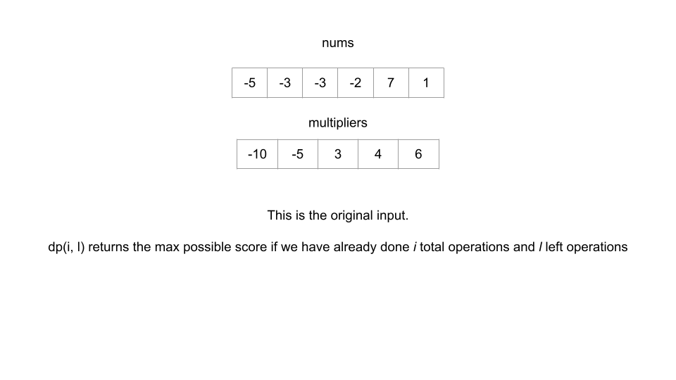
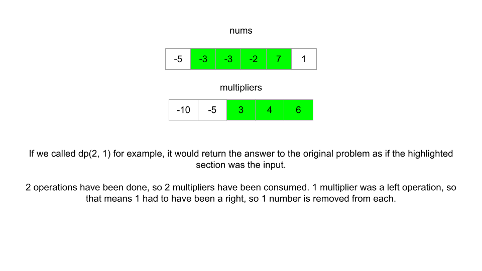
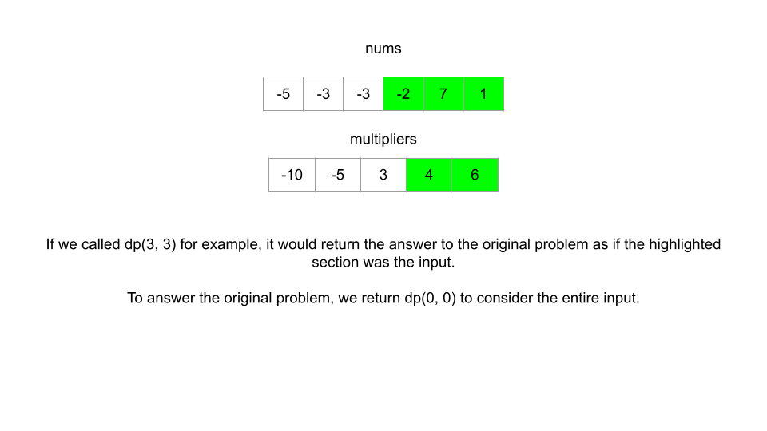

Для решения этой проблемы мы снова начнем с рассмотрения нисходящего подхода.
В этой статье мы рассмотрим проблему максимального результата за выполнение операций умножения. Мы можем сказать, что это проблема DP, потому что она требует максимального балла, и каждый раз, когда мы решаем использовать число из nums, это влияет на все будущие возможности. Давайте решим эту проблему с помощью фреймворка:
1. Функция или массив, отвечающие на задачу для данного состояния.
В дальнейшем обсуждении мы будем использовать 0-индекс, поскольку он более удобен для мышления и кодирования.
Поскольку мы работаем сверху вниз, нам нужно определиться с двумя вещами для нашей функции dp. Какие переменные состояния нам нужно ему передать и что он вернет. Нам даны два входных массива: nums и multipliers. Проблема говорит, что нам нужно сделать m операций, и на i-й операции мы получаем балл, равный multipliers[i] умножает число с левого или правого конца nums, которое мы удаляем после операции. Это означает, что нам нужно знать 3 вещи для каждой операции:
Мы можем использовать одну переменную состояния, i, чтобы указать, сколько операций мы уже выполнили, что означает multipliers[i] — текущий множитель, который будет использоваться. Для крайнего левого числа, оставшегося в nums, мы можем использовать другую переменную состояния: left, это указывает, сколько левых операций мы выполнили на данный момент. Если бы мы выполнили, скажем, 3 операции слева, если бы нам нужно было выполнить еще одну операцию слева, мы бы использовали nums[3]. Мы можем сказать то же самое для крайнего правого оставшегося числа — давайте воспользуемся переменной состояния right, который указывает, сколько правильных операций мы выполнили на данный момент.
Может показаться, что нам нужны все три переменные состояния, но мы можем сформулировать уравнение для одной из них, используя две другие. Если мы знаем, сколько элементов мы выбрали слева, left, и мы знаем, сколько всего элементов мы выбрали, i, тогда мы знаем, что, должно быть, выбрали i - left элементов с правой стороны. Исходная длина числа это n, что означает, что индекс самого правого элемента равен right = n - 1 - (i - left). Поэтому нам нужны только 2 переменные состояния: i и left, и мы можем выполнить вычисления прямо внутри функции.
Теперь, когда у нас есть переменные состояния, что должна возвращать наша функция? Проблема состоит в том, чтобы получить максимальную оценку за некоторое количество операций, поэтому давайте напишем нашу функцию dp(i, left) возвращающую максимально возможный балл, если мы уже это сделали i операций и использовали left цифр с левой стороны. Чтобы ответить на исходную задачу, нам следует вернуть dp(0, 0).



2. Рекуррентное соотношение перехода между состояниями.
В каждом состоянии мы должны выполнить операцию. Как сказано в описании проблемы, нам нужно решить, брать ли из левого конца (nums[left]) или правого конца (nums[right]) текущего nums. Затем нам нужно умножить выбранное нами число на multipliers[i], добавить это значение к нашему результату и, наконец, удалить выбранное нами число из nums. В целях реализации «удаление» номера из nums означает увеличение наших переменных состояния i и left, чтобы они указывали на следующие два left и right числа.
Допустим mult=multipliers[i] and right = nums.length - 1 - (i - left). Единственное решение, которое нам нужно принять, — это брать left или right nums.
Поскольку мы хотим максимизировать свой результат, нам следует выбрать сторону, которая дает больше очков. Это дает нам наше рекуррентное соотношение:
dp(i, left)=max(mult⋅nums[left]+dp(i + 1, left + 1), mult⋅nums[right]+dp(i + 1, left))
Где mult⋅nums[left]+dp(i + 1, left + 1) представляет собой очки, которые мы получаем, взяв из левого конца nums плюс максимальное количество очков, которое мы можем получить из оставшегося массива nums и mult⋅nums[right] +dp(i + 1, left) представляет очки, которые мы получаем, взяв из правого конца nums, плюс максимальное количество очков, которое мы можем получить из оставшегося массива nums.
3. Base cases
В постановке задачи сказано, что нам необходимо выполнить m операций. Когда i равно m, это означает, что у нас не осталось операций. Следовательно, мы должны вернуть 0.
Давайте объединим три части структуры для решения проблемы.
Совет: для Python модуль functools предоставляет очень удобные инструменты, которые автоматически запоминают для нас функцию. Мы собираемся использовать декоратор @lru_cache в реализации Python.
Если вам нужно запомнить функцию на собеседовании и вы используете Python, уточните у интервьюера, можно ли использовать такие модули, как functools.
Эта конкретная проблема имеет очень жесткие временные рамки. В Java вместо использования хэш-карты для запоминания мы будем использовать 2D-массив. Для Python мы собираемся ограничить размер нашего кэша до 2000.
# lru_cache from functools automatically memoizes the function
@lru_cache(2000)
def dp(i, left):
# Base case
if i == m:
return 0
mult = multipliers[i]
right = n - 1 - (i - left)
# Recurrence relation
return max(mult * nums[left] + dp(i + 1, left + 1),
mult * nums[right] + dp(i + 1, left))
n, m = len(nums), len(multipliers)
return dp(0, 0)
В восходящей реализации массив работает так же, как функция сверху вниз. dp[i][left] представляет максимально возможный балл, если было выполнено i операций и выполнено left операций.
Ранее в карточке исследования мы узнали, что, хотя восходящий метод обычно быстрее, чем нисходящий, его зачастую труднее реализовать. Это связано с тем, что порядок итераций должен быть точным. В приведенных ниже реализациях вы увидите, что мы используем ту же самую математику для правильного расчета и то же рекуррентное соотношение, но нам нужно выполнить итерацию в обратном направлении, начиная с m (потому что базовый случай возникает, когда i равно m). Нам также необходимо инициализировать dp одной дополнительной строкой, чтобы мы не выходили за пределы на первой итерации внешнего цикла.
n, m = len(nums), len(multipliers)
dp = [[0] * (m + 1) for _ in range(m + 1)]
for i in range(m - 1, -1, -1):
for left in range(i, -1, -1):
mult = multipliers[i]
right = n - 1 - (i - left)
dp[i][left] = max(mult * nums[left] + dp[i + 1][left + 1],
mult * nums[right] + dp[i + 1][left])
return dp[0][0]
Временная и пространственная сложность обеих реализаций O(m2), где m — длина множителей. В конце этой главы мы поговорим более подробно о временной и пространственной сложности.